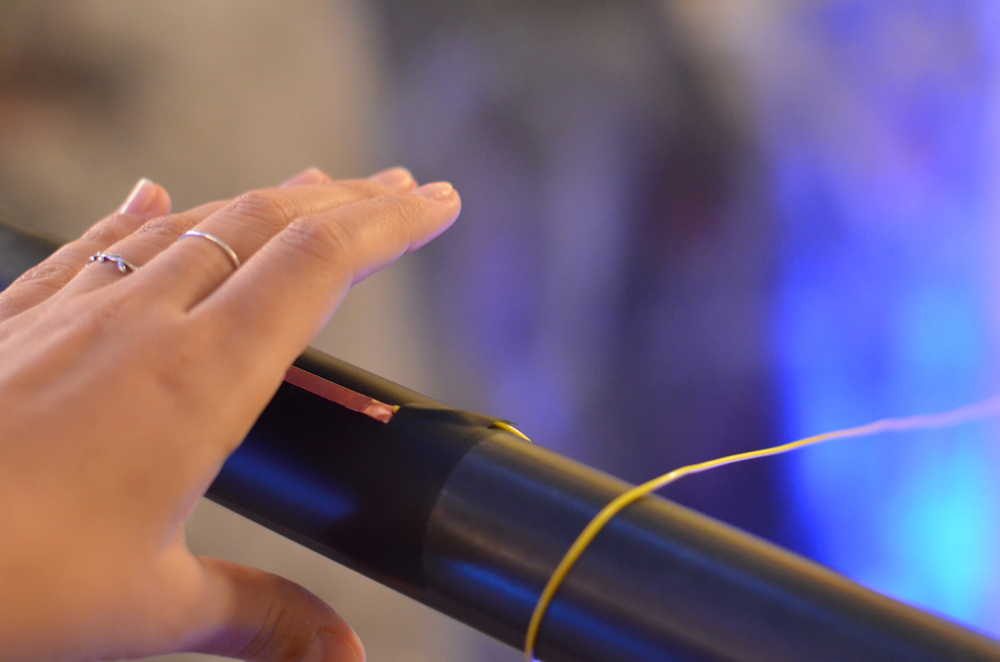

ci-poetry
The interactive installation ci-poetry simulates the concept of collaborative coding or continuous integration (CI) through generative poetry creation. The installation has been designed for the specific context of R1, Sweden’s first reactor hall, now dismantled and used as a cultural venue. In the installation, a collective poem is composed and sonified by 12 “poets” who each contribute with a line of their own source poem.
Participants trigger a collaboration by touching one of the capacitive sensors placed on 12 rails in the hall. A random line from their poem is chosen and placed in a random line of the collaborative poem, successfully merging their contribution with the existing poem. If two or more poets happen to edit the same line, the merge fails, and the changed are not recorded, symbolizing the behavior of continuous integration.
